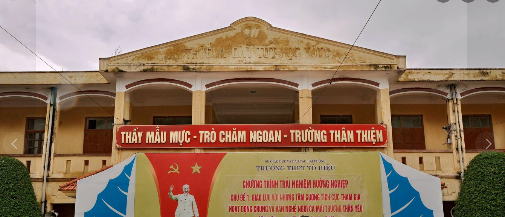

1.TRƯỜNG THPT TÔ HIỆU
Trường C3 Tô Hiệu Vĩnh Bảo là một trường học ở Hải Phòng, Việt Nam1. Trường THPT Tô Hiệu Vĩnh Bảo cũng đã đón nhận Bằng công nhận Trường THPT chuẩn Quốc gia vào ngày 19/11/20232. Ngoài ra, trang Facebook của trường cũng có một số thông tin về trường và cộng đồng học sinh1
Được biết đến là một ngôi trường có chất lượng tốt với tỉ lệ học sinh đỗ tốt nghiệp, đại học ổn định và rất cao. trong việc giảng dạy. Trường THPT Tô Hiệu hiện được nhiều phụ huynh quan tâm và tìm hiểu để cho con em theo học. Theo dõi bài đánh giá Trường THPT Tô Hiệu có tốt không ngay sau đây biết thêm nhiều thông tin chi tiết và hiểu rõ hơn về ngôi trường này nhé!
Không chỉ chú trọng việc học lý thuyết, các hoạt động ngoại khóa cũng được trường chú trọng quan tâm giúp các em phát triển toàn diện các kỹ năng.
ĐỌC THÊM
2.TRƯỜNG C3 ĐÁNG HỌC NHẤT THẾ GIỚI
Năm 1978, theo quyết định của UBND thành phố Hải Phòng, là Trường cấp 3 vừa học, vừa làm Vĩnh An được thành lập, đóng trên địa bàn xã Việt Tiến (huyện Vĩnh Bảo, TP. Hải Phòng).
Năm 1992 dưới sự chỉ đạo của UBND thành phố, UBND huyện Vĩnh Bảo, trường đã sáp nhập với trường cấp 2 Vĩnh An. Lúc này trường có tên là PTTH VHVL Tô Hiệu (cấp 2 - 3 Tô Hiệu).
Năm 1995 số lượng học sinh tăng nhanh vì có cả học sinh của 3 xã thuộc huyện Tiên Lãng, Tứ Kỳ. Trường được tách thành trường PTTH VHVL Tô Hiệu và trường THCS Vĩnh An được tách về UBND huyện Vĩnh Bảo quản lý.
Tháng 8/ 2017 trường đổi tên thành trường THPT Tô Hiệu và sử dụng đến bây giờ.
ĐỌC THÊM
3.TÔ HIỆU VĨNH BẢO CÓ GÌ ?
Những năm đầu thành lập trường còn nhiều khó khăn khi chỉ có 8 gian nhà cấp 4 là nơi làm việc của thầy cô giáo, 03 phòng học 9 gian là mái tranh vách đất được dựng lên bằng đóng góp tự nguyện của nhân dân phục vụ cho việc giảng dạy và học tập.
Song nhận được sự quan tâm của UBND tỉnh, UBND huyện Vĩnh bảo cũng như người dân, tháng 5/1028 cơ sở vật chất của trường đã được tu sửa, nâng cao nhằm đem đến một môi trường học tập tốt nhất dành cho các em học sinh theo học tại trường.
Trải qua 44 năm xây dựng và phát triển, trường hiện có 68 cán bộ, giáo viên và nhân viên với hơn 1000 học sinh. 100% cán bộ, giáo viên đạt chuẩn về trình độ, trong đó có hơn 15% trên chuẩn, 5% đang học nâng chuẩn; hơn 50% giáo viên được công nhận giáo viên dạy giỏi cấp thành phố và Chiến sỹ thi đua. Hơn 70% giáo viên được công nhận là Chiến sỹ thi đua cấp cơ sở. Nhà trường luôn tạo điều kiện để cán bộ giáo viên được nâng cao trình độ nghiệp vụ.
ĐỌC THÊM